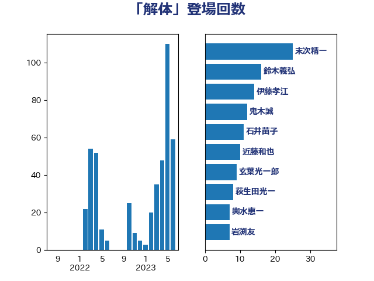

単語「解体」

| 末次精一 | 立憲民主党 | 25 回 |
| 鈴木義弘 | 国民民主党 | 16 回 |
| 伊藤孝江 | 公明党 | 14 回 |
| 鬼木誠 | 立憲民主党 | 12 回 |
| 石井苗子 | 日本維新の会 | 11 回 |
| 近藤和也 | 立憲民主党 | 10 回 |
| 玄葉光一郎 | 立憲民主党 | 9 回 |
| 萩生田光一 | 自由民主党 | 8 回 |
| 輿水恵一 | 公明党 | 7 回 |
| 岩渕友 | 日本共産党 | 7 回 |
| 西村明宏 | 自由民主党 | 6 回 |
| 斉藤鉄夫 | 公明党 | 6 回 |
| 山口壯 | 自由民主党 | 6 回 |
| 井上哲士 | 日本共産党 | 6 回 |
| 足立康史 | 日本維新の会 | 5 回 |
| 赤木正幸 | 日本維新の会 | 5 回 |
| 穂坂泰 | 自由民主党 | 5 回 |
| 田村貴昭 | 日本共産党 | 5 回 |
| 浜田靖一 | 自由民主党 | 5 回 |
| 柳本顕 | 自由民主党 | 5 回 |
| 堤かなめ | 立憲民主党 | 5 回 |
| 三上えり | 立憲民主党 | 5 回 |
| 高橋千鶴子 | 日本共産党 | 4 回 |
| 芳賀道也 | 国民民主党 | 4 回 |
| 櫛渕万里 | れいわ新選組 | 4 回 |
| 早坂敦 | 日本維新の会 | 4 回 |
| 庄子賢一 | 公明党 | 4 回 |
| 岸田文雄 | 自由民主党 | 4 回 |
| 堂故茂 | 自由民主党 | 4 回 |
| 嘉田由紀子 | 無所属 | 4 回 |
| 務台俊介 | 自由民主党 | 4 回 |
| 下条みつ | 立憲民主党 | 4 回 |
| 音喜多駿 | 日本維新の会 | 3 回 |
| 谷公一 | 自由民主党 | 3 回 |
| 西村康稔 | 自由民主党 | 3 回 |
| 若松謙維 | 公明党 | 3 回 |
| 竹詰仁 | 国民民主党 | 3 回 |
| 田村智子 | 日本共産党 | 3 回 |
| 林芳正 | 自由民主党 | 3 回 |
| 本庄知史 | 立憲民主党 | 3 回 |
| 太栄志 | 立憲民主党 | 3 回 |
| 中川宏昌 | 公明党 | 3 回 |
| 馬場雄基 | 立憲民主党 | 2 回 |
| 金子恵美 | 立憲民主党 | 2 回 |
| 足立敏之 | 自由民主党 | 2 回 |
| 西村智奈美 | 立憲民主党 | 2 回 |
| 笠井亮 | 日本共産党 | 2 回 |
| 福島みずほ | 社会民主党 | 2 回 |
| 石井正弘 | 自由民主党 | 2 回 |
| 田中健 | 国民民主党 | 2 回 |
| 猪瀬直樹 | 日本維新の会 | 2 回 |
| 源馬謙太郎 | 立憲民主党 | 2 回 |
| 浜口誠 | 国民民主党 | 2 回 |
| 浅田均 | 日本維新の会 | 2 回 |
| 榛葉賀津也 | 国民民主党 | 2 回 |
| 松島みどり | 自由民主党 | 2 回 |
| 星北斗 | 自由民主党 | 2 回 |
| 日下正喜 | 公明党 | 2 回 |
| 新妻秀規 | 公明党 | 2 回 |
| 打越さく良 | 立憲民主党 | 2 回 |
| 徳永久志 | 無所属 | 2 回 |
| 山田美樹 | 自由民主党 | 2 回 |
| 小林茂樹 | 自由民主党 | 2 回 |
| 小島敏文 | 自由民主党 | 2 回 |
| 仁比聡平 | 日本共産党 | 2 回 |
| 須藤元気 | 無所属 | 1 回 |
| 長友慎治 | 国民民主党 | 1 回 |
| 鈴木敦 | 国民民主党 | 1 回 |
| 野田国義 | 立憲民主党 | 1 回 |
| 遠藤敬 | 日本維新の会 | 1 回 |
| 近藤昭一 | 立憲民主党 | 1 回 |
| 辻清人 | 自由民主党 | 1 回 |
| 赤嶺政賢 | 日本共産党 | 1 回 |
| 西野太亮 | 自由民主党 | 1 回 |
| 西岡秀子 | 国民民主党 | 1 回 |
| 蓮舫 | 立憲民主党 | 1 回 |
| 神谷宗幣 | 参政党 | 1 回 |
| 礒崎哲史 | 国民民主党 | 1 回 |
| 石井章 | 日本維新の会 | 1 回 |
| 田所嘉徳 | 自由民主党 | 1 回 |
| 田嶋要 | 立憲民主党 | 1 回 |
| 田島麻衣子 | 立憲民主党 | 1 回 |
| 渡辺博道 | 自由民主党 | 1 回 |
| 浜野喜史 | 国民民主党 | 1 回 |
| 沢田良 | 日本維新の会 | 1 回 |
| 水岡俊一 | 立憲民主党 | 1 回 |
| 武井俊輔 | 自由民主党 | 1 回 |
| 梅谷守 | 立憲民主党 | 1 回 |
| 柳ヶ瀬裕文 | 日本維新の会 | 1 回 |
| 掘井健智 | 日本維新の会 | 1 回 |
| 平木大作 | 公明党 | 1 回 |
| 川田龍平 | 立憲民主党 | 1 回 |
| 岸真紀子 | 立憲民主党 | 1 回 |
| 岡田直樹 | 自由民主党 | 1 回 |
| 山本太郎 | れいわ新選組 | 1 回 |
| 山岡達丸 | 立憲民主党 | 1 回 |
| 小池晃 | 日本共産党 | 1 回 |
| 大西健介 | 立憲民主党 | 1 回 |
| 大岡敏孝 | 自由民主党 | 1 回 |
| 堂込麻紀子 | 無所属 | 1 回 |
| 坂本祐之輔 | 立憲民主党 | 1 回 |
| 和田政宗 | 自由民主党 | 1 回 |
| 北神圭朗 | 無所属 | 1 回 |
| 加藤勝信 | 自由民主党 | 1 回 |
| 伊波洋一 | 無所属 | 1 回 |